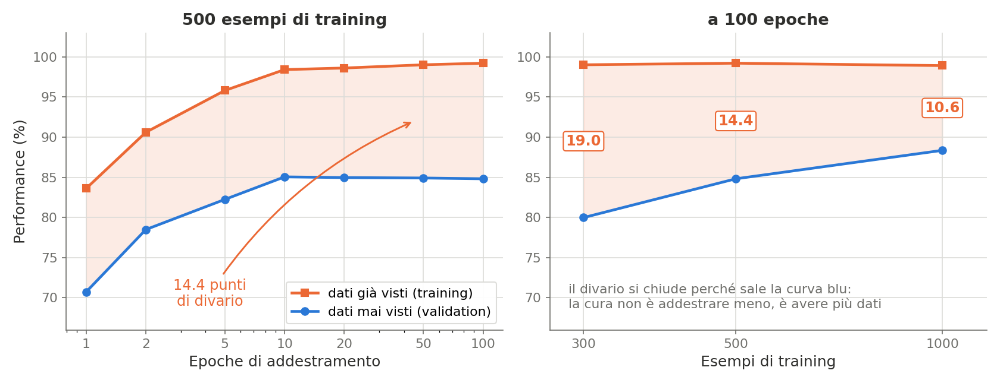
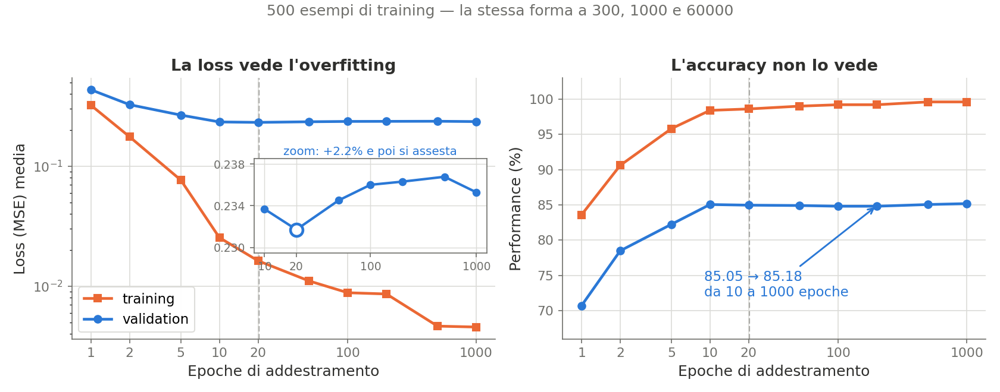
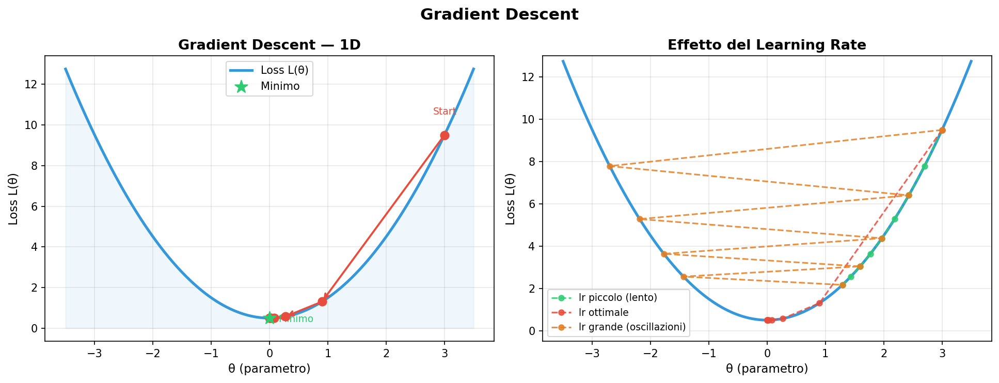
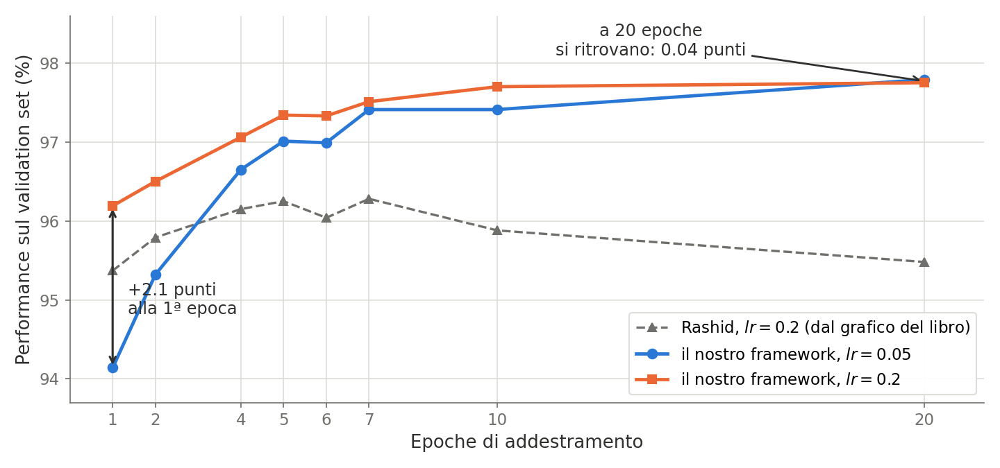

Laboratorio 15
Studi di Performance e Tracce dei Progetti Finali
Soluzione del Laboratorio 14
Il cuore del Trainer: quattro righe, tutto il machine learning.
Batch<ntype> batch = train_dataset.get_next_batch();
Matrix<ntype>& preds = model->forward(batch.inputs); // 1A. Forward
loss += lossfunc->forward(preds, batch.targets); // 1B. Loss
model->backward(lossfunc->backward(preds, batch.targets)); // 2A. Backward
model->update_parameters(optimizer); // 2B. UpdateE la differenza fra addestramento e test:
L’argmax con Eigen, che scrive l’indice negli argomenti:
Chi ha addestrato su tutto MNIST dovrebbe essere oltre il 94%.
Obiettivo di Oggi
Una rete che funziona non è una rete che si capisce. Sappiamo che con lr = 0.1 e 128 nodi si arriva al 94%, ma non sappiamo perché quei numeri, né cosa accade cambiandoli.
Oggi facciamo scienza sperimentale sul nostro modello: tre studi sistematici che producono file di dati, e che nel Lab 16 diventeranno grafici. Il primo programma lo scrivete per intero; il secondo e il terzo sono lo stesso programma con un ciclo diverso: copiate, adattate, e usate il tempo risparmiato per il quarto studio, quello in cui si fabbrica l’overfitting per poterlo vedere.
Nella seconda parte: le tracce dei progetti finali.
Il metodo: un parametro alla volta
La struttura è sempre la stessa. Si fissa tutto tranne una variabile, si addestra, si registra la performance:
Tre dettagli non negoziabili:
rng.seed(12345)prima del ciclo: senza un seme fisso, differenze fra configurazioni si confondono con il rumore dell’inizializzazione casuale.model.clear()alla fine di ogni giro: è il metodo aggiunto nel Lab 10. Dimenticarlo accumula layer sopra i precedenti, e i risultati diventano senza senso.- Il formato dei dati è due colonne separate da spazio:
valore performance.
Task 1: perf_vs_nodes.cpp
Quanti neuroni servono nel layer nascosto?
#include "./mnist_dataset.hpp"
#include "./sequential.hpp"
#include "./loss.hpp"
#include "./optimizers.hpp"
#include "./mnist_metric.hpp"
#include "./trainer.hpp"
// Costruisce una rete 784 -> Nnodes -> 10
void mlp(int Nnodes, Sequential<double>& model) {
model.add(std::make_unique<DenseLayer<double>>(Nnodes, 784));
model.add(std::make_unique<SigmoidLayer<double>>());
model.add(std::make_unique<DenseLayer<double>>(10, Nnodes));
model.add(std::make_unique<SigmoidLayer<double>>());
}
int main() {
MnistDataset<double> train_dataset("mnist_train.csv");
MnistDataset<double> val_dataset("mnist_test.csv");
std::fstream f;
f.open("perf_vs_nodes.dat", std::ios::trunc | std::ios::out);
int neps = 2, max_batches = 100; // pochi, per un test veloce
double lr = 0.05;
MSELoss<double> lossfunc;
SDOptimizer<double> optimizer(0.1);
fixedScheduler<double> fixedlr(&optimizer, lr);
MnistMetric<double> performance;
Sequential<double> model;
Trainer<double> trainer(&model, &lossfunc, &optimizer, &fixedlr);
rng.seed(12345);
std::vector<int> nodes{10, 20, 50, 100, 200};
for (auto v : nodes) {
std::cout << "--- Test con " << v << " Nodi ---" << std::endl;
mlp(v, model);
trainer.train(train_dataset, val_dataset, performance, neps, max_batches);
f << v << " " << performance.get_result() << "\n";
model.clear();
}
f.close();
}Notate la funzione mlp(): estrarre la costruzione della rete in una funzione è ciò che rende possibile il ciclo.
Task 2: perf_vs_learning_rate.cpp
Stessa struttura, ma qui non si ricostruisce la rete: si cambia solo il learning rate attraverso lo scheduler.
std::vector<double> lrates = {0.001, 0.01, 0.05, 0.1, 0.5};
f.open("perf_vs_learning_rate.dat", std::ios::trunc | std::ios::out);
for (auto lr : lrates) {
mlp(100, model);
fixedlr.set_lr(lr); // <- il punto dello studio
trainer.train(train_dataset, val_dataset, performance, neps, max_batches);
f << lr << " " << performance.get_result() << "\n";
model.clear();
}Ecco a cosa serviva set_lr nell’interfaccia Scheduler: senza, bisognerebbe ricreare l’ottimizzatore a ogni giro.
Task 3: perf_vs_epochs.cpp
Note
Qui c’è una scelta di metodo: con model.clear() ogni punto è un addestramento indipendente da zero, ed ep è davvero il numero di epoche di quel punto. Senza clear(), train() continuerebbe ad addestrare la stessa rete: i punti sarebbero cumulativi e allora su file dovete scrivere il totale progressivo (1, 3, 6, 11), non ep. Sono due esperimenti diversi: decidete quale volete misurare, e fate in modo che l’ascissa dica la verità.
Studio 4: fabbricare l’overfitting
Nei Task 1-3 l’overfitting non si vede: con 79.400 parametri e 60.000 esempi la rete non ha modo di impararli a memoria. Per vederlo bisogna rovesciare il rapporto, e basta un argomento del costruttore:
Poi si misura la performance su entrambi gli insiemi. Trainer::test è pubblico e restituisce la metrica, quindi non serve altro:
Scrivete overfitting.cpp con le epoche in {1,2,5,10,20,50,100} e lanciatelo con 300, 500 e 1000 esempi. Costa pochi secondi: 500 esempi per 100 epoche sono meno di un’epoca sul dataset intero.
Studio 4: cosa aspettarsi

A sinistra, 500 esempi: 99.2% su ciò che la rete ha già visto, 84.8% su ciò che non ha mai visto. Quei 14.4 punti sono l’overfitting — la definizione operativa di “imparare a memoria invece di generalizzare”.
“Con 500 esempi invece di 60.000, ci credo”
È l’obiezione giusta, ed è il motivo del pannello di destra: lì c’è anche il vostro caso reale. A 60.000 esempi il divario non è zero, è di 1.8 punti — la rete fa 99.5% sul training e 97.7% sul validation, e il divario cresce con le epoche (0.2 punti alla prima, 1.8 alla ventesima). I 500 esempi non creano un fenomeno che altrimenti non esisterebbe: lo ingrandiscono di dieci volte perché diventi leggibile. È il motivo per cui nei Task 1-3 non l’avete visto, non il motivo per cui non c’era.
Studio 4: la loss, non l’accuracy

Stessa rete, stesse epoche, due strumenti. La loss di validation ha un minimo a 20 epoche e poi risale del 2%: è la firma canonica dell’overfitting. La performance della stessa rete passa da 85.05 a 85.18 fra la decima e la millesima epoca — cioè non dice assolutamente niente.
Perché l’accuracy è cieca
L’accuracy passa da un argmax, che è una soglia: finché la classe giusta resta la più alta il numero non si muove, anche se la rete diventa sempre più sicura delle sue risposte sbagliate. La loss guarda i valori delle uscite, non solo quale sia la maggiore. L’overfitting si diagnostica sulla loss, e chi guarda solo l’accuracy conclude che va tutto bene.
Studio 4: quanto costa insistere?
Poco, e il perché è istruttivo. Portando lo stesso addestramento a 1000 epoche, cinquanta volte oltre il minimo:
| epoche | loss training | loss validation | perf. val. |
|---|---|---|---|
| 20 | 0.01629 | 0.23172 ← minimo | 84.96 |
| 100 | 0.00882 | 0.23601 | 84.81 |
| 500 | 0.00465 | 0.23678 ← massimo | 85.05 |
| 1000 | 0.00457 | 0.23529 | 85.18 |
La validation loss si assesta invece di andare alla deriva, e negli ultimi 500 giri la training loss passa da 0.004650 a 0.004570: la rete è ferma.
La rete si parcheggia — e non è un caso
\(\boldsymbol{\delta} = 2(\mathbf{p}-\mathbf{t})\odot\mathbf{o}\odot(1-\mathbf{o})\): quando le uscite si avvicinano ai target entrambi i fattori tendono a zero — l’errore perché è piccolo, la derivata della sigmoide perché satura. Con MSE e sigmoide il gradiente si spegne da sé. Con la cross-entropy quel secondo fattore si cancella, i pesi continuano a crescere, e il degrado diventa ripido: è allora che l’early stopping serve davvero.
Studio 4: cosa portarsi via
Tre affermazioni, in ordine di quanto sono solide:
Il divario è grande e permanente. 99.6% su ciò che la rete ha visto, 85.2% su ciò che non ha visto: 14.4 punti, aperti nelle prime dieci epoche e mai più chiusi. Questo è l’overfitting, e su questo non c’è ambiguità.
Il minimo della loss di validation è reale ma poco profondo. 2% a 500 esempi, 2.6% col dataset intero. Si misura, e va misurato sulla loss perché l’accuracy non lo vede.
Il degrado successivo non è robusto. A \(lr = 0.6\) sparisce: la loss finale coincide col minimo, e la validation è perfino migliore (85.3% contro 84.8%). Un passo più grande rende lo SGD più rumoroso, e il rumore impedisce di infilarsi nei minimi stretti che memorizzano — funziona da regolarizzatore.
Il metodo, non il numero
Per arrivare a queste tre frasi sono servite tre cose che nessuna singola misura conteneva: il pavimento di rumore, per sapere quali differenze non significano niente; il divario train/validation, per sapere se c’è memorizzazione; e la loss invece dell’accuracy, per non usare uno strumento cieco. Nessuna delle tre è un dettaglio tecnico: sono ciò che distingue una misura da un’impressione.
Studio 5: curare l’overfitting
Opzionale. Il mnist_dataset.hpp del Lab 12 ha il codice di augmentation: a ogni batch l’immagine viene ruotata e riscalata, con probabilità aug_prob. Si fabbricano dati che non ci sono — ciò che manca a 500 esempi.
- Con 500 esempi, 100 epoche, con e senza quella riga: partite dai 14.4 punti di divario e guardate quanto si chiude — sulla loss, non solo sull’accuracy. È il regime in cui l’effetto si vede.
- Ripetete sui 60.000: il guadagno è di qualche decimo di punto, dentro il rumore. Col seed fisso il confronto resta appaiato e leggibile, ma sappiate quanto poco state misurando.
aug_prob = 1.0emaxAngle = 30: troppa augmentation distrugge l’informazione. Dove sta il massimo?
Note
È l’antipasto della traccia 3. Chi la sceglierà dovrà anche capire i modi 2 e 3 (num_batches_fact), che invece di modificare le immagini triplicano il dataset con copie ruotate, come nel libro di Rashid.
Cosa aspettarsi dai dati
I risultati di riferimento sul framework completo. Attenzione agli assi: la colonna dei nodi è a 7 epoche e \(lr = 0.05\), quella del learning rate a 1 epoca e 100 nodi. Non sono confrontabili fra loro.
| nodi (7 ep.) | perf. | \(lr\) (1 ep.) | perf. | |
|---|---|---|---|---|
| 10 | 0.921 | 0.01 | 0.916 | |
| 20 | 0.948 | 0.1 | 0.947 | |
| 50 | 0.966 | 0.2 | 0.961 | |
| 100 | 0.972 | 0.3 | 0.957 | |
| 200 | 0.975 | 0.6 | 0.946 |
I nodi danno rendimenti decrescenti. Da 10 a 50 nodi si guadagnano 4.5 punti; da 100 a 200 se ne guadagnano 0.3, raddoppiando i parametri e il tempo di calcolo. È il momento in cui la capacità del modello smette di essere il collo di bottiglia.
Come si leggono quei numeri
Quanto rumore hanno le vostre misure
Tre programmi si sovrappongono in due punti, e il confronto dà la scala dell’incertezza. A 100 nodi e 7 epoche: perf_vs_nodes dà 0.9718, perf_vs_epochs 0.9741 — 0.23 punti. A \(lr=0.2\) e 1 epoca: perf_vs_learning_rate dà 0.9605, perf_vs_epochs 0.9619 — 0.14 punti. Sotto i due decimi di punto non state misurando niente: è per questo che il calo a 6 epoche, nelle curve del Task 3, non va interpretato.
Il learning rate ha un massimo, ed è a 0.2. Oltre quel passo l’ottimizzatore scavalca il minimo invece di scendervi (la figura della Lezione 3). Rashid, per tentativi, chiama 0.2 “a sweet spot for the MNIST data set”: la nostra misura, fatta con un altro codice in un altro linguaggio, cade sullo stesso valore.
L’effetto del learning rate

Il pannello di destra è esattamente ciò che il vostro perf_vs_learning_rate.dat misura: passo piccolo significa convergenza lenta, passo grande significa oscillare intorno al minimo senza raggiungerlo.
Task 3: cosa aspettarsi

Il learning rate compra velocità, non destinazione: alla prima epoca 0.2 vale 2.1 punti più di 0.05, alla ventesima le due curve si ritrovano a 0.04 punti. Il libro invece scende dopo la settima epoca, e noi non lo riproduciamo a nessuno dei due passi: il learning rate non è il colpevole.
Un disaccordo aperto — e la riga che lo chiude
Trainer::train rimescola il training set a ogni epoca; il codice del libro lo scorre sempre nello stesso ordine, e ripetere sempre la stessa sequenza è proprio ciò che permette alla rete di adattarsi ai dati che ha già visto. È l’ipotesi più probabile, e si prova con una riga: reset_and_shuffle(false). Se avete tempo, misuratela — vale più di qualunque spiegazione a parole.
Progetti Finali: le tracce
Il progetto si presenta all’orale. Può estendere BASIC_NEURAL++ oppure partire dal framework più avanzato NEURAL++ fornito a lezione.
1. Ottimizzatori Avanzati (AdamW, SGD + Momentum)
Nuove classi derivate da Optimizer<ntype>, con gestione dello stato interno (le velocità del momentum, le medie mobili di Adam). Verifica: grafico comparativo che mostri il vantaggio in velocità di convergenza e stabilità rispetto allo Steepest Descent.
2. Scheduler Dinamici
Cosine Annealing (decadimento su una curva cosinusoidale) e ReduceLROnPlateau (riduzione quando la validation loss smette di migliorare). Verifica: mostrare come evitino di scavalcare il minimo nelle fasi finali.
3. Data Augmentation
Rotazioni, deformazioni elastiche, zoom applicati durante l’estrazione dei mini-batch. Verifica: il divario fra accuratezza su training e test set si riduce.
Progetti Finali: le tracce (2)
4. Reti Convoluzionali (CNN) — per studenti eccellenti
Layer convoluzionali 2D e di pooling. Richiede tensori 3D/4D, l’implementazione della cross-correlazione nel forward e la derivazione del gradiente rispetto a filtri e input. Verifica: una piccola CNN tipo LeNet che superi il 99% su MNIST.
5. Loss Alternative e Softmax
Sostituire la MSE con la Categorical Cross-Entropy più un layer finale Softmax. Verifica: analizzare matematicamente perché quella combinazione dà gradienti più informativi quando le predizioni sono molto sbagliate, accelerando l’apprendimento iniziale. Le formule sono nel Lab 14.
6. App di Inferenza Interattiva
Un’interfaccia grafica (OpenCV UI, Qt) dove disegnare una cifra col mouse, che viene classificata in tempo reale. Richiede di caricare i pesi salvati in una sessione di sola inferenza e gestire l’I/O grafico.
Tip
Le tracce 1, 2 e 5 sono le più abbordabili perché le interfacce esistono già: Optimizer, Scheduler e Loss sono state progettate esattamente per essere estese senza toccare il resto. La 4 è la più impegnativa.
Task da Completare
Nel prossimo laboratorio trasformeremo questi .dat in grafici.